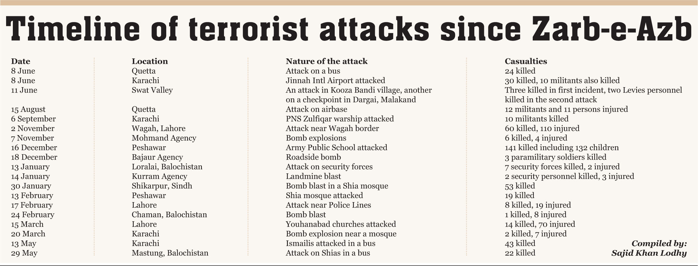

HEROS OF ZARB-E-AZB
Man At Their Best
Timeline:

June
15 June 2014
The first phase of the operation began with intensified airstrikes in North Waziristan, targeting militant training facilities, hideouts, and other infrastructure. The Pakistani military destroyed eight militant hideouts in the previous night's airstrikes. Hideouts in Degan-Boya and Datta Khel were targeted by jet aircraft, since foreign and local insurgents linked to the Karachi airport attack were confirmed there; an ammunition dump was also destroyed. As many as 140 militants (mostly Uzbek) were reportedly killed in the strikes, including commander and airport attack mastermind Abu Abdur Rehman Almani. North Waziristan was sealed by troops on its border with neighbouring agencies and FATA regions to block the movement of militants. In North Waziristan, troops cordoned off insurgent bases (including those in the towns of Mir Ali and Miranshah). Logistical and administrative arrangements for IDPs were made by the Disaster Management Agency, with the establishment of registration points and IDP camps.Surrender points were established for militants wishing to give up their arms.Aerial surveillance of the area was conducted. Afghan security forces were requested to seal the border on their side to prevent militants from escaping across the border and initiate immediate measures to eliminate TTP militants and their hideouts in Kunar, Nuristan and elsewhere in Afghanistan.
16 June 2014
Seven fleeing militants were killed on the outskirts of Mirali overnight, with three soldiers injured in the exchange of fire.In a separate incident, seven more militants were killed when they tried to flee from the cordoned-off area. Two Pakistani soldiers were reported killed in an exchange of gunfire.Six militant hideouts in Shawal, North Waziristan were destroyed by an early-morning airstrike by two fighter jets, with 27 militants killed. There were no civilians in Shawal. Inter-Services Public Relations (ISPR) reported six soldiers killed and three injured in an improvised explosive device (IED) explosion between the Afghan border and Ghulam Khan Tehsil in North Waziristan. According to ISPR, a convoy of security forces was targeted on Bane Dar Road in Ghulam Khan(on the Pakistani-Afghan border). Forces cordoned off the area, launching a search operation.Three insurgents were killed by Special Services Groupsniper fire while planting IEDs near Miramshah.
17 June 2014
Airstrikes destroyed six hideouts in North Waziristan, killing 25 foreign and local militants. Airstrikes were also conducted in the Hasokhel area of Mir Ali. At least three suspected militants were killed when they attempted to flee a cordoned-off area in Miramshah, with one soldier injured in the exchange of fire.No operations had begun in developed areas to ensure that no militants could escape the cordon and all verified civilians were evacuated.More than 40 percent of North Waziristan was cleared of militants in the first three days of the operation.
19 June 2014
Fifteen militants were reportedly killed overnight in the Zartatangi Heights, east of Miramshah, by army Cobra helicopter gunships. The area was one of the main communications centres of the insurgents. In a separate incident, eight Uzbek militants were killed near Miramshah while planting IEDs on the road between Miramshah and Mir Ali.The evacuation of the civilian population from Miramshah and Ghulam Khan began. Checkpoints were established in a number of locations, where IDPs received food and medicine from security forces.As many as 400 Afghan families left North Waziristan for Afghanistan via Ghulam Khan.
20 June 2014
Three militant hideouts in the Qutab Khel area, on the outskirts of Miramshah, were destroyed in the early morning by army Cobra helicopter gunships with artillery and sniper assistance. Twelve militants, including some foreigners, were killed in the strikes and a large cache of arms and ammunition destroyed.Militants inside cordoned-off areas attempted to flee. Six attempts were halted overnight, and three local residents without identification were arrested trying to flee from the cordon.Another 24 suspects disguised as IDPs were arrested at security checkpoints in Mirali and Miramshah. The civilian evacuation continued from North Waziristan towards Bannu, with 200,000 IDPs evacuated so far.
21 June 2014
A total of 30 militants were killed in early-morning airstrikes in uninhabited areas of Khyber and North Waziristan Agencies. Jet aircraft destroyed two hideouts near the Pakistan-Afghanistan border in Khyber Agency, killing 10 militants. These surgical strikes were in line with the security forces' strategy to take on the militants across the FATA.Three hideouts were destroyed in Hassu Khel, North Waziristan, killing 20 militants.
23 June 2014
Eight militant hideouts near Mir Ali were destroyed by jet aircraft during the early morning, killing 15. Tunnels were spotted in the targeted areas. Ten militants were killed attempting to flee from cordoned-off bases in Spinwam and Mir Ali, with two Pakistani soldiers also reportedly killed in an exchange of fire. The curfew was lifted for two hours to evacuate the remaining civilians. At the Saidgai security checkpoint, 414,429 IDPs were registered to date. An army medical corps field hospital was being established in Bannu for displaced persons.The civilian evacuation was almost complete. About 450,000 IDPs arrived in Bannu, and were registered at the Saidgai checkpoint.
24 June 2014
Twenty militants were killed and 12 hideouts destroyed in early-morning air strikes in Khyber Agency.Twenty-seven militants were killed in afternoon jet strikes in Mir Ali and the surrounding area, with 11 hideouts and a large weapons cache destroyed.An afternoon suicide car-bomb attempt was foiled in the Spinwam area of North Waziristan. When an explosive-laden vehicle approached a checkpoint outside a civilian hospital, soldiers fired at the vehicle (which exploded 100 meters from the checkpoint. Two soldiers and one civilian were reportedly killed when the roof of a nearby building collapsed from the explosion.
25 June 2014
Pakistan Air Force (PAF) jets destroyed five hideouts in Mir Ali, killing 13 militants. Twelve militants surrendered to Pakistan army.
26 June 2014
The evacuation of 450,000 civilians was completed, and the operation's second phase began with a ground offensive by the Pakistani military.Seven militants surrendered at the North Waziristan surrender center, bringing the total to 19.
27 June 2014
PAF aircraft destroyed six confirmed hideouts on the outskirts of Mir Ali in an evening raid, killing 11 militants.[TTP Miranshah Commander Umer was killed on the outskirts of the town by security forces that night.
28 June 2014
Militant groups were targeted during the early morning by integrated Pakistani artillery, tank and heavy-weapons fire outside Miranshah, killing seven.An al-Qaeda commander, revealed by initial interrogation as an explosives, IED and suicide-belt expert, was arrested trying to flee from a surrounded base.Three militants were arrested by security forces while trying to cross the Indus River near Mianwali. All river crossings were fortified to seal escape routes.
29 June 2014
Sixteen militants were killed when PAF fighter jets targeted their hideouts in Mir Ali, North Waziristan.According to military sources, seven militant hideouts, explosives and ammunition dumps were also destroyed in the airstrikes.
30 June 2014
Early-morning ground operations began in and around Miramshah. Search operations were conducted by infantry and the Special Services Group, killing 15 militants. Troops discovered underground tunnels and IED-preparation factories in the cleared areas, with three soldiers reportedly injured in an exchange of fire. The civilian population had been evacuated.Since the beginning of the operation 376 militants were killed and 19 surrendered, with 61 hideouts destroyed in the operation's first phase. Seventeen soldiers were reportedly killed.
July
1 July 2014
According to the ISPR, during ground operations in Miranshah a landmine factory was discovered and 225 cylinders, 700 pipes filled with explosive materials and 150 unfinished land mines were recovered.Two Pakistani soldiers were killed and a third reportedly injured when militants ambushed a military vehicle in Mir Ali, North Waziristan.
2 July 2014
Ten militants were killed when Pakistani helicopters shelled hideouts in the Khar Warsak region, 12 kilometres (7.5 mi) north of Miramshah, with three hideouts destroyed in the airstrikes.
3 July 2014
The bodies of seven militants were recovered in the Darpa Khel area of Mir Ali. A security official reportedly said, "Bodies were of suspected militants who were gunned down by security forces in Mir Ali tehsil of the agency", adding that the forces had advanced from Mir Ali and Miramshah Bazaar towards the outskirts of the agency after destroying three hideouts in Mir Ali (one of which held foreign militants).
4 July 2014
Pakistani soldier Niak Fiaz Mohammad was killed by an IED explosion, during a house-to-house search operation in North Waziristan. Mohammed's funeral was held in Bannu before the soldier's body was transported to his hometown, Mansehra. ISPR director-general Major General Asim Saleem Bajwa said, "We salute the courage and bravery of Niak Fiaz Shaheed."A Pakistani soldier from Azad Kashmir was killed in the Jord region of North Waziristan. The soldier, Sadheer Ismail from Malsi Ghari Dupatta, was buried in his family cemetery. Pakistan Army personnel attended Ismail's funeral, where friends praised his determination and resolve.
5 July 2014
Airstrikes targeted Miramshah and the village of Boya, destroying five militant hideouts, caves, and an ammunition cache. The early-morning strikes killed 20 militants, most of whom were reportedly Uzbeks.A Pakistani soldier was killed during the ground offensive that morning when an IED exploded.
6 July 2014
Hundreds of Taliban fighters reportedly cut their hair and beards to flee the operation. According to IDPs, the Taliban disguised themselves in the weeks before the Pakistan Army operation. Although the militants advocated sharia in Pakistan and were contemptuous of Western culture, refugees said that in North Waziristan the militants enjoyed imported products.
7 July 2014
Pakistani Chief of Army Staff General Raheel Sharif visited North Waziristan. Sharif was received by Lieutenant General Khalid Rabbani, the Peshawar corps commander, and briefed by the general officer commanding for the operation. He commended the troops for their determination, commitment and resolve, praising the progress achieved since the beginning of the operation.
8 July 2014
Pakistani Defence Minister Khawaja Asif said in an interview with Radio Pakistan that 400 militants and 20 Pakistani soldiers had been killed so far in the operation. Although he declined to provide a time frame for the operation's end, he expressed a resolve to finish as early as possible. Airstrikes by the PAF killed 13 militants (including foreigners) in the Digaan area of North Waziristan, according to an ISPR press release. Seven militant hideouts were also destroyed.
9 July 2014
Pakistani airstrikes targeted three hideouts, killing 11 militants in Shawal.Ground operations continued in Miramshah, which was 80-percent cleared.
10 July 2014
The Pakistani army invited local and international media to Miramshah to observe the militant facilities. Flags, weapons and explosive materials were shown. ISPR Director Major General Asim Bajwa and Operation Commander Major General Zafar Khan briefed the media on the operation's progress. They said that as many as 400 terrorists were killed and another 130 injured to date. Eleven IED factories were uncovered, and over 2,000 IEDs confiscated. Bajwa said that underground tunnels built by the militants (one a kilometer long) had also been discovered: "This (Miranshah) was one of their major base, we have dislodged them from here and now they are on the run, We have also discovered their command and control centre, which would definitely affect their capabilities."
11 July 2014
Injured Taliban commander Adnan Rashid, al-Qaeda commander Mufti Zubair Marwat and Marwat's two guards were captured by Pakistani security forces in the Shakai Valley of South Waziristan when they tried to escape from cordoned-off North Waziristan, and were moved to an undisclosed location by army helicopter. Marwat was reportedly the brother of Mufti Sajjad Marwat, an al-Qaeda spokesman for Afghanistan and Pakistan. Rashid was planning to flee to Afghanistan.The arrest was confirmed by the TTP
12 July 2014
Thirteen militants, primarily foreign, were killed in an early-morning PAF airstrike after firing rockets at a security checkpoint in Mir Ali; seven hideouts and an ammunition cache were also destroyed.The connection of the cleared area in Miramshah and the Miramshah-Dattakhel road continued. In Khar Warsak and Zartangi, security forces discovered six motorcycle IEDs, two vehicle IEDs, two 12.7 mm guns, one 14.5 mm gun, three vehicles and eleven explosive beltsduring the previous 24 hours. Two explosive-laden vehicles were also destroyed in airstrikes at Degan. Three militants, including one Uzbek, were arrested in Boya. Two suicide bombers were identified and chased, but they blew themselves up when encircled by security forces near the town.Eighteen militants were killed in PAF airstrikes in the Mosaki area, 25 kilometres (16 mi) east of Miramshah, and artillery shelling in the Kharkamar area, 30 kilometres (19 mi) west of Miramshah. "Six terrorist hideouts and a huge ammunition cache were destroyed and at least 13 militants, mostly Uzbek, were killed in the Saturday morning strikes, five militants were killed and two militant hideouts were destroyed by artillery fire in the Kharkamar area on Saturday night", a security official said.
13 July
According to the ISPR, five hideouts in Mir Ali were targeted by the military and several militants were killed. 14 july
After Miramshah was under control, a ground offensive was launched in Mirali (second-largest town in North Waziristan) and the nearby Boya area.Pakistani troops killed six militants (two of them suicide bombers), including Taliban commander Matiullah.
15 July 2014
In a media briefing, ISPR director general Major General Asim Bajwa said that 451 militants were dead and 88 hideouts. destroyed. According to Bajwa, 26 soldiers were killed in the operation to date. According to ISPR, five Pakistani soldiers were killed in exchanges of fire in and around Mirali (including an officer, Captain Akash Rabbani). Two soldiers were injured, and 11 insurgents were killed.
16 july 2014
Thirty-five militants were killed in airstrikes in the Shawal area. According to an ISPR press release, "Today, early morning at least 35 fleeing terrorists were killed through aerial strikes in Shawal valley" The Mir Ali ground offensive following the clearance of Miranshah continued, with airstrikes expected.
18 July 2014
House-to-house searches were conducted in areas of Mir Ali. Four militants were killed in an exchange of fire and 12 IEDs, an IED factory and caches of ammunition and foreign currency were seized.
19 July 2014
"The command and control system of terrorists was destroyed in North Waziristan," said Pakistani Defence Minister Khawaja Asif. "There is no place for terrorism in a democratic country."The villages of Boya and Degan were cleared by Pakistani military, and the ground offensive continued in areas of Miral.Corps Commander Lieutenant General Khalid Rabbani visited Mirali, Boya and Degan, meeting with the troops, and relief for IDPs was underway.
20 July
Twenty-eight militants were killed in airstrikes targeting six hideouts in the Shawal area of North Waziristan.
23 July 2014
Twenty militants, including foreigners, were killed by Pakistani airstrikes which destroying four hideouts in the Shawal tehsil of North Waziristan.The ground operation in Mir Ali continued, with an ammunition factory and foreign currency seized from Mir Ali Bazaar. According to ISPR, a disposal operation of mines and explosive materials was underway in Miramshah with six IED factories cleared by army engineers to date.
24 July 2014
Two Pakistani soldiers were killed in an evening IED explosion near Ghulam Khan, in North Waziristan (near the Pakistani-Afghan border).
26 July 2014
During the Mir Ali ground offensive, eight militants were killed and five hideouts were destroyed.
27 July 2014
Pakistani security forces cleared 70 percent of Mir Ali and adjacent areas.
29 July 2014
The Pakistani Chief of Army Staff, General Raheel Sharif celebrated the Eid al-Fitr with army soldiers and IDPs in Baka Khel and Bannu.
30 July 2014
According to the official sources, a Pakistan Army check post was attacked by Afghan militants in Lower Dir. The cross-border attack involved 70-80 militants. In retaliation, at least seven militants were killed and nine others were injured.
August
2 August 2014
During the ground operation in Mirali, three militats were killed in fire-exchange. An ammunition dump was also seized.
4 August 2014
During ground offensive in Datta Khel area, Seven Uzbek militants were killed in fire-exchange, two soldiers identified as Subedar Mashkoor and Lans Naik Zaheer were also killed. Data Khel was cleared and the ground operation continued in Mirali and other areas.
5 August 2014
Airstrikes on 6 militant hideouts were conducted by the Pakistani military, killing at least 30 militants. According to ISPR, the raids were carried out in the Datta khel, Marshikhel and Kamsham areas. Mirali was also cleared and the ground operation in Mirali came to an end.
9 August 2014
The Pakistani Prime Minister Nawaz Sharif during National Security Conference in Islamabad said: "We pay tribute to the sacrifices of our armed forces in the war against terrorism and express solidarity with their families." Sharif added that the "intensity of the blowback of the military operation would be low."
14 August 2014
A Pakistani security forces camp in Miramshah was targeted with rockets by unknown militants. No loss of life occurred.
19 August 2014
48 militants were killed in airstrikes and shelling by gunship helicopters of the Pakistani military, destroying seven militant hideouts and several vehicles in North Waziristan and Khyber Agency.
30 August 2014
32 militants were killed and three hideouts destroyed by army gunship helicopters in the remote areas of North Waziristan. According to ISPR, 23 explosive laden vehicles and four ammunition dumps were also destroyed.
September
3 September 2014
According to the ISPR, 910 militants had been killed so far in the operation. The ISPR statement added that eighty-two soldiers had also been killed (42 were killed in North Waziristan Agency), while 269 others have been injured. The Pakistan Armed Forces had cleared Miramshah, Mirali, Datta Khel, Degan, Boya areas of North Waziristan which were considered strongholds of terrorists.
8 September 2014
Ten militants were killed and five vehicles were destroyed by Pakistani gunship helicopters in Boya Degan, according to ISPR.
9 September 2014
A Pakistani soldier and six militants were killed in a counterattack during a clearing operation near Datta Khel. A civilian logistic staff member was also killed while providing supplies to the Pakistani forces.
10 September 2014
35 militants were killed when Pakistan bombed three militant hideouts in Datta Khel. Another 30 militants were killed when Pakistani fighter planes bombed two militant hideouts in Shawal.
12 September 2014
DG ISPR Asim Bajwa stated that the Pakistani Army was ready to go into remote areas to take down militants, if required. He added that the 10 militants behind the attack on Malala Yousafzai that took place on 12 October 2012 had been arrested, and those behind attack on Ziarat residency had also been arrested. He revealed that over 1,000 militants had been killed in North Waziristan including 45 hardcore militants, while 134 hardcore militants had also been arrested.
14 September 2014
Three Frontier Corps personnel were killed when a group of militants launched a rocket attack on a mountain fort in Spinwam area of North Waziristan near Afghan border.
15 September 2014
Fifteen militants were killed in fresh air strikes in North Waziristan. "Army Aviation Combat helicopters in precise strikes in Tabai area of North Waziristan Agency destroyed 10 explosive laden vehicles and 5 terrorists hideouts, 15 terrorists were killed," an ISPR statement said.
16 September 2014
Twenty militants were killed in Pakistani airstrikes in Khyber Agency's Tor Darra area targeting three militant hideouts and destroying two ammunition dumps. Another 11 militants were killed as a militant attack from across the border targeted Pakistani security forces in Dandi Kuch in the Spinwam area of North Waziristan. Pakistani troops also arrested one terrorist. Three Pakistani paramilitary soldiers were also killed in the gun-battle.
17 September 2014
At least 11 militants and three soldiers were killed on Tuesday when Afghan terrorists attacked a Pakistani border post in North Waziristan Agency from Afghanistan. Another 40 militants were killed in air raids on militant hideouts in North Waziristan. "Precision air strikes destroyed five terrorists' hideouts as well as ammunition dumps in village Nawe Kili and Zaram Asar in an area north of Dattakhel", ISPR said. "Many foreigners were among those killed in the air strikes", it added.
18 September 2014
23 militants were killed in airstrikes on militant hideouts. "Today in precise aerial strikes carried out on terrorists hideouts in Zerom, Ismail Khel, and Datta Khel in North Waziristan, 23 terrorists were killed," said ISPR.
20 September 2014
TTP spokesperson Shahidullah Shahid confirmed that a senior Commander Gul Hasan Afghani was killed in clashes with the Pakistan Army in the Boya area of the agency two days ago.At least three militants were killed in an exchange of fire with the security forces in Boya area of the North Waziristan, the ISPR said. A Pakistan Army's naib subedar Muzzamil was also killed during the fire exchange.
23 September 2014
A suicide attack targeted the convoy of Frontier Corps Deputy Inspector General killed at least five people in Peshawar Cantonment including a Soldier and wounded 18 others. FC soldier NK Zareen Afridi was among those who embraced martyrdom .The banned Tehreek-i-Taliban Pakistan claimed responsibility for the attack. Twenty-three militants were killed in airstrikes in the Bangidar area of Ghulam Khanx in North Waziristan Agency, according to an ISPR press release.According to ISPR reports, nineteen militants were killed in air strikes on militant hideouts in Dandi Kachkol near Ghulam Khan, Gurbaz and Mana near Pasht Ziarat in North Waziristan.
28 September 2014
At least 15 militants were killed when Pakistan air force jets struck militant hideouts in North Waziristan. Foreign militants were also among the dead. Five militant hideouts were also destroyed.
October
3 October 2014
Fifteen militants were killed by airstrikes in the Jamrud and Bara areas of Khyber Agency, and three militant hideouts were destroyed, ISPR said in a press-release. Over 1,200 militants had been killed in the operation so far.
5 October 2014
Despite the upcoming winter, the Pakistani military decided to continue the operation, dispelling an impression that the harsh weather may force military authorities to halt Operation Zarb-e-Azb, which has been ongoing since mid-June 2014. "Conducting operation in winters is certainly a challenge for the security forces but it is also a challenge for militants," a military official told the media.
12 October 2014
At least 11 militants were killed in military airstrikes targeting two militant hideouts in North Waziristan. In separate airstrikes in the Khyber Agency's Kuki Khel area, at least 10 militants were killed. Three militant hideouts were also destroyed, said an ISPR statement.
15 October 2014
Five people were killed and seven were injured in a suicide attack targeting members of a peace committee, in the Peer Mela area of Tirah valley.
16 October 2014
In an apparent response to the previous day's suicide bombing, 21 suspected terrorists were killed in airstrikes in the Khyber Agency's Tirah Valley, the Pakistani military said. Five terrorist hideouts were also destroyed.
17 October 2014
Eight militants were killed in the Aka Khel area of Khyber Agency, in clashes with Pakistani security forces. A militant hideout was also destroyed during the clashes.
21 October 2014
28 militants, including foreign militants, were killed in Pakistani airstrikes in the Datta Khel area of North Waziristan.
22 October 2014
DG ISPR Asim Bajwa, addressing the media after a friendly cricket match was played between the IDPs, accompanied by star cricketer Shahid Afridi and the Pakistani Army, said that Operation Zarb-e-Azb is going well, and that 1,100 militants have been killed so far. He refused to give a specific timeline of the operation's completion, and said that the army is working towards making a "comprehensive plan" to rehabilitate them.
25 October 2014
18 militants were killed in Pakistani airstrikes in Khyber Agency's Khyber district near the Afghan border.
27 October 2014
Pakistani officials claimed to have found evidence of "new sanctuaries" set up by the TTP and its affiliates in the Afghan territory, near the border with North Waziristan Agency. In two separate incidents of aerial strikes, 33 militants were killed and nine militant hideouts were destroyed, according to the ISPR. "In early morning aerial strikes ahead of Dattakhel, 18 militants were killed. Later, in Gharlamai area another 15 militants were killed by gunship helicopters," the ISPR statement added.
29 October 2014
Twenty militants were killed, and eight others were injured in airstrikes conducted by the Pakistan Air Force in the Akka Khel area of the Khyber Agency.
November
6 November 2014
"Operation Zarb-e-Azb has helped disrupt Haqqani network's ability to launch attacks on Afghan territory", a senior commander for US and NATO forces in Afghanistan, Lieutenant General Joseph Anderson said in a Pentagon-hosted video briefing from Afghanistan. He added that the Haqqani network was now fractured too.
14 November 2014
Thirty militants including foreigners were killed in air strikes on militant hideouts in Datta Khel.
16 November 2014
27 militants including foreigners and commanders were killed in air strikes in Datta Khel militant hideouts. Last night, seven suspected terrorists were also killed during a search operation in Datta Khel. In the exchange of fire, three Pakistani soldiers were also killed while four were injured. "The Haqqani network and East Turkistan Movement have been eliminated from the area", commander of Operation Zarb-e-Azb Major General Zafarullah Khan said. He added that 1,198 terrorists were killed and another 356 were injured so far.
25 November 2014
Twenty terrorists, including members of the Haqqani network were killed in aerial strikes in North Waziristan.
December
2 December 2014
32 militants, including foreigners, were killed in airstrikes in Datta Khel and Orakzai regions. In another incident, Pakistani military repulsed a pre-dawn militant attack on a military check post in the Sherin Dara area of Orakzai Agency.
3 December 2014
Fifteen militants were killed in aerial strikes targeting militant hideouts in North Waziristan.
6 December 2014
Pakistani special forces killed al Qaeda commander Adnan Gulshair el Shukrijumah. Several other militants were also killed during a targeted operation in the Wana subdivision of South Waziristan Agency. During the fore exchange, a Pakistani soldier Havildar Masood was also killed while another was critically injured. 8 DecemberAirstrikes killed 30 militants, including important commanders in the Datta Khel area of North Waziristan. The killed were local commanders of Hafiz Gul 9 December 2014
It was rumoured that Hafiz Gul Bahadur, a militant commander, was killed in air strikes in Datta Khel district of North Waziristan Agency. A compound where 30 to 40 top commanders of Gul Bahadur's Shura Mujahideen were having a consultative meeting, was targeted killing all of them.
26 December 2014
Aerial strikes in Datta Khel killed 23 terrorists. An underground ammunition dump and tunnel system was also destroyed.
31 December 2014
Pakistani air-strikes in the Shawal area of North Waziristan killed 23 terrorists.
2015
January
7 January 2015
Twelve militants were killed as gunship helicopters targeted militant hideouts in Datta Khel. In the air-strikes, four militant hideouts and seven vehicles were also destroyed.
16 January 2015
Director General Inter Services Public Relations (ISPR) Major General Asim Saleem Bajwa said security forces have killed 2,000 militants in North Waziristan so far. Bajwa added that 200 soldiers had been killed during the Operation Zarb-e-Azb and 800 others were injured.
25 January 2015
35 militants, including foreigners, were killed in air strikes targeting militant hideouts in Datta Khel.
27 January 2015
76 militants including foreigners were killed in the Pakistani air-strikes targeting militant hideouts in Datta Khel area of North Waziristan. 53 militants were killed in the first round and 23 militants were killed in the second round of the air-strikes. Six militant hideouts and an ammunition dump was destroyed.
February
20 February 2015
A Pakistan Army Major Zahid Shaheed was killed in Datta Khel with a sniper rifle. In Pakistani retaliation, 5 terrorists were killed.
April
22 April 2015 At least 35 militants were killed in aerial strikes in South Waziristan and Datta Khel area of North Waziristan, according to ISPR.
May
23 May 2015
Four Pakistani soldiers were killed and two others were injured in Dattakhel area of North Waziristan Agency at night after their vehicle was targeted by an improvised explosive device. In Pakistani counter-retaliation, the military launched a search-operation killing seven militants in the pursuing fire-exchange.
June
28 June 2015
23 militants were killed in the Pakistani military air-strikes in the North Waziristan and Khyber agencies. Foreign militants were also among those killed in strikes which also targeted ammunition dumps.
July
5 July 2015
Seven Pakistani soldiers were killed in the Taliban attacks in North and South Waziristan. in Pir Ghr, Taliban attacked a Pakistani military convoy and killed two soldiers and wounded another three. Another two remote-controlled bomb attacks targeting military vehicles in North Waziristan and South Waziristan killed five soldiers and injured six. According to the Pakistani intelligence officials, the Pakistani military was facing fierce resistance in the final push towards Shawal valley.In the pursuing fire-exchange and military's retaliation, 12 militants were killed in Datta Khel in the North Waziristan agency.
7 July 2015
A Pakistani soldier was killed in Taliban attack on an army bunker in the South Waziristan agency.
April
On the 3rd of April, the Pakistani government declared victory and the end of the operation after clearing 640 square kilometers in Shawal, killing some 250 terrorists.
May
Pakistan clears last militant stronghold North Waziristan Agency
In 2014
11 June 2014:
Two strikes in Miramshah killed 16 suspected militants and injured several others. These were the first drone strikes of 2014; the previous strike occurred on 25 December 2013 in the Qutab Khel area of Miramshah, killing four suspected militants.
18 June 2014:
At least six militants were killed in Miramshah.
10 July 2014:
A strike in the Datta Khel area killed seven militants and injured three others.
16 July 2014:
Four missiles were fired in a strike in the tehsil of Datta Khel, two on a house and two on a vehicle, killing twenty militants and injuring five.
19 July 2014:
Eleven militants, including two commanders, were killed in the tehsil of Madakhel, Data Khel, North Waziristan. Most of the militants belonged to the Punjabi faction of the Taliban.
6 August 2014:
A strike in Datta Khel killed six militants and injured two others.
24 Sept 2014:
At least 8 people including Uzbek Militants were reportedly killed in a US drone strike Dattakhel tehsil of North Waziristan.
5 October 2014
: At least 5 suspected militants were killed in a US drone strike in Shawal area of South Waziristan tribal region.
6 October 2014:
At least 8 suspected militant were killed and several other injured in a U.S drone strike in Shawal district of North Waziristan.
7 October 2014:
At least 3 suspected militants were killed in a U.S drone strike in North Waziristan region.
30 October 2014:
A US drone strike killed at least 4, injuring several others in Birmal Tehsil of South Waziristan
11 November 2014:
A US drone strike in Doa Toi area of Datakhel tehsil in North Waziristan Agency killed 4 suspected militants.
21 November 2014:
Reportedly Five suspected militants including two commander of 'Qaedat al-Jihad in the sub-continent’, a newly established branch of Al Qaeda were killed in a US Drone strike in Datakhel region of North Waziristan Agency.
6 December 2014:
A US drone strike killed a key Al Qaeda leader Umar Farooq along with four others in Datakhel region of North Waziristan Agency.
26 December 2014:
Two separate US Drone strikes in the Kund and Mangroti area of Shawal in North Waziristan Agency killed at least 7 suspected militants.
In 2015
4 January 2015:
A reportedly high-value unidentified Uzbek commander of Taliban's Gul Bahadur group was killed along with 8 others by a US drone strike in Shawal area of North Waziristan Agency.
15 January 2015
A US drone strike reportedly killed 7 suspected militants in Wacha Dara area of Liddah Tehsil of South Waziristan Agency.
19 January 2015:
A US drone strike killed 6 while injuring 4 others in the ShahiKhel area of North Waziristan's Shawwal tehsil.
28 January 2015:
A US drone strike killed 7 while injuring another militant in the Shawal area of North Waziristan.
18 March 2015:
A US drone strike killed a TTP commander Khawrey Mehsud along with 3 others in Shabak area of Kurram Agency.
12 April 2015:
A U.S drone strike killed 4 suspected militants in North Waziristan.
16 May 2015:
A drone strike Killed 7 to 13 militants in the Mana area of North Waziristan Agency.
18 May 2015:
A U.S. drone strike killed 6 suspected militants in Zoye Narye Area of North Waziristan.
2 June 2015:
Four suspected militants were killed in a drone strike targeting a vehicle in the Shawal area of North Waziristan.
6 June 2015:
At least nine suspected militants were killed in a strike in Shawal's Zoya Saidgai area, considered to be a hideout of the Afghan Taliban.
________________________________________________
.png "Google")
.jpg "Youtube")

.jpg "Twitter")
All @ Copy Right Reserved 2018..